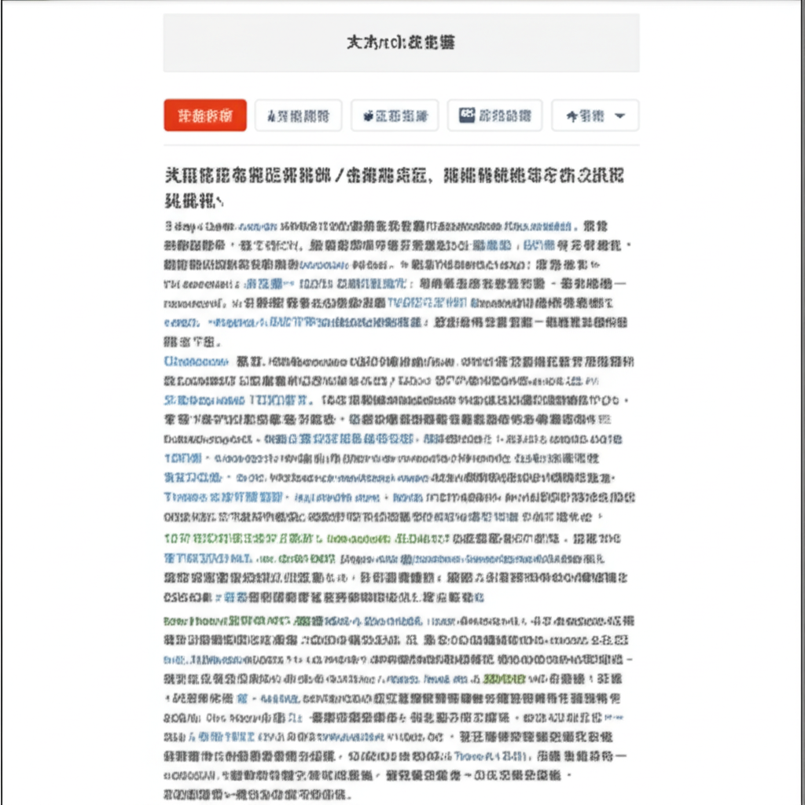

# 今日新聞摘要：川普關稅戰、樂齡生活、柯文哲案件與超慢跑風潮
## 引言
今天的新聞涵蓋了全球經濟、社會福利、政治事件以及健康趨勢等多個方面。從川普可能引發的全球關稅戰、南投縣的樂齡生活講座、柯文哲涉及的案件，到近期流行的超慢跑運動，反映了當前社會的多樣性和複雜性。本文將對這些新聞進行簡單的歸納和整理。
## 主體內容
### 第一點：川普關稅戰與全球經濟
川普可能再次發動關稅戰的消息引起全球關注。“常識革命”和經濟緊急狀態等概念的提出，預示著貿易保護主義可能捲土重來。尤其值得注意的是，台灣可能會受到關稅政策的影響。這表明全球經濟依然存在不確定性，國際貿易關係可能會面臨新的挑戰。
### 第二點：南投縣銀髮樂齡生活講座與社會福利
南投縣政府將於6月20日舉辦「銀向減壓樂齡生活講座」，旨在提升銀髮族的生活品質。這反映了台灣社會對老年人口日益增長的關注，以及政府和社會各界為提供更多元的樂齡服務所做的努力。這類活動有助於提升老年人的幸福感，並促進社會的包容性。
### 第三點：柯文哲相關案件與政治動態
柯文哲涉及京華城案和政治獻金案，北檢已起訴多人，並對柯文哲求處重刑。這起案件持續發酵，成為近期政治焦點。案件的發展將對台灣政局產生一定影響，也引發了民眾對政治倫理和透明度的關注。
### 第四點：超慢跑風潮與健康生活
超慢跑作為一種低壓力的運動方式，在中高齡族群中越來越受歡迎。從運動用品的銷售情況（瑜珈墊）到地方政府舉辦的超慢跑活動（台中市），再到媒體對超慢跑益處的報導（促神經新生、大腦排毒），都表明超慢跑正成為一種新的健康趨勢。它不僅適合不喜歡劇烈運動的人，也為大眾提供了一種簡單易行的健身選擇。
## 結論
今日新聞呈現出全球經濟的潛在風險、社會福利的持續進展、政治事件的複雜性，以及健康生活的普及趨勢。這些資訊對於了解當前社會的發展方向具有重要意義，也提醒我們關注各個層面的變化，並積極應對可能出現的挑戰。